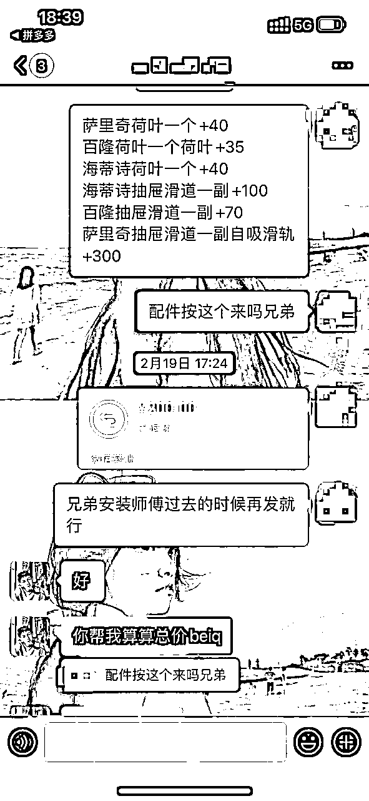
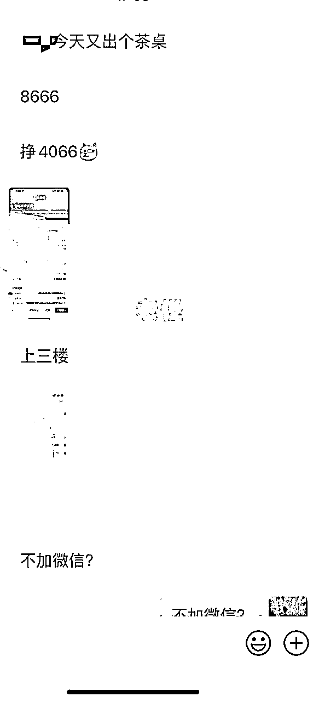
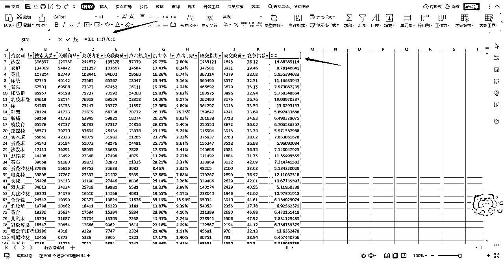

来源：https://cddlg8y7bl.feishu.cn/docx/BXwwdAhdEoas60xJBd4cpDXSnwe
大家好，我是老怪。98年的一个电商小伙子，目前是公司60号人左右，保时捷帕拉梅拉车主。同时也是一名抖音小博主，10来万粉丝。我的公司体系是阿米巴+自营。
说说我和生财的缘分吧。我是一个很乐意付费进入圈子的人，基本上你们看到的抖音圈的商业博主以及一些私董会我都进了。我有很多原来做淘客的朋友经常线下聚会的时候，他们会经常聊起生财这个圈子。周围的人都说这个圈子的人都很拼很内卷，于是乎我就付费加入了~
在这个圈子我默默潜水差不多一年，每次的精华帖我也会去看，大家分享的项目以及还参加了一次小航海。真心觉得生财这个社群的能量太厉害了。
所以我也决定写一篇心得感悟分享给各位圈友~，多分享多交朋友。
以下是我团队目前做的一些业绩：
这是我们团队新店（其中一个）的销售表：2.15 起的店，我这个帖子 2.29 号分享的。
这是我们其中的一个大店，大店我们目前还配合了短视频的素材：
这里仅代表我个人的意见哈，如有雷同，那就是别人抄我的哈哈哈。我跟抖音电商打交道已经快四年了，从一开始的抖店达人模式（也就是对接达人给佣金他们帮我带货）到自己做直播间到短视频投流到现在的纯商品卡。其实我是一直在跟着抖音每个阶段的红利去走。抖音要做什么方向，我就去跟着他干什么方向。简单来说，就是抖音赏饭吃，我就去哪里接着。
我相信很多人都选择干过抖店的商品卡这个项目。因为市面上的镰刀很多，他们会教你起店（带你做女装），数据特别好看，但是都不赚钱，这大概就是目前抖音小店商品卡被割韭菜的那些人的现状。
所以很多人都觉得抖音商品卡不赚钱。嗯，只能说，是你做才不赚钱。每个项目都有赚钱的人，不要认为自己做了不赚钱，就觉得这个项目不行。要记住，不行的是你，而不是项目。 这句话也是我经常和下面的人说的。
你要想赚钱，首先要比平台快一步知道，他下一步要做什么？
直播和短视频带货的红利已经是逐渐消失了，抖音的电商GMV要拉上来，就只能是从商城发力。从哪一些细节点可以看出呢？就商品卡免佣这个政策，就知道抖音在流量倾斜给商城这边。以及大家在刷短视频的时候，有时候会刷到一些商城推荐，还有点击短视频带货的链接往下滑，也会看到一些商城推荐。
所以整个2024年-2025年依旧是抖音商品卡的红利！
第一，市场竞争小。很多人都在竞争百货女装美妆，做的都是低客单产品，而且利润很卷，导致很多人都是数据好看，没利润。
第二，客户价值高。我自己有做私域的盘，我自己知道私域的价值。我认为高客单价意味着人群素质也相对高一些。这些通过抖音吸引过来的询单（特别是点击小店客服过来的，转化率都很高），我们都会进行私域运营，基本上在我们私域里的客户，平均客单价都能去做 8k-10k。
下图 就是一些私域的客户，他会有各式各样的搭配，只要需要定制的毛利基本去到 50% 左右。


第三，自身资源。我本来就是属于佛山这边的，在当地也有对应的家具工厂资源，所以有利于这个项目的发展。
第四，能挣钱，到货后退货少。抖音是一个退货率相对于其他平台来说比较高的地方。但是高客单大件物品，因为来回运费贵，很多消费者都不会退回来。因为到货后的退货是很少的。
1、找搜索词。
电商罗盘行业搜索词------2.选择家具类目------3.选择搜品类----4.选择近7天的排序----5.看成交排行-----6.点开搜索词详情-----7.选择关键词通过关键词到抖音商品里面找品。备注：直播的、带品牌的搜索词不找。
2、通过搜索词找品。
通过上面的关键词到抖音商城里面搜索品：
有4-150个销量以上 暂时还没有评价的，价格在100以上的。
或有4-150个销量以上并且15天内有评价的，价格在100以上的。（且评价里面品质相关的差评少，如果很多就说明这个品不好，不要找了）
两个满足其中1个即可。
备注：带明显品牌的不找的不找。如果店铺的营业执照是注册五个月以内的，可以优先筛选该店内的其他品
3、如何找货源。
在拼多多上找链接。
对于拼多多的链接要求：
a：销量超过800，评论数超过200条。（特别优秀有热度的链接可以破格选择）
b：质量差评及格。商品差评率不能高于2%（质量相关的差评，物流的可以不管），滑下去最近20条评论的质量差评不超过2条。
c：拼多多的主图和标题，要求和抖音的链接尽量一致；其次sku也尽量一致（文字可以不一样，但是至少看得出来是同一款）
d：尽量找到厂家、第一手货源：该商品价格相对最低，且店铺主页的商品不多、种类相似、不杂。（比如都是实木的：实木沙发、实木床等，说明这个商家专门做实木）
e：找拼多多链接的的时候要检查主图、视频的质量！要最高清的主图图和视频！
4、店铺产品布局
a：床 衣柜 床头柜 电视柜 茶几 占比至少40%
b：选品价格150-2500这个区间的商品占比60-80%
电竞椅那些价格不高的产品做辅助产品，需要挑选一些有热度的产品【辅助产品成交价格200以上】
沙发 懒人沙发 客单价 500- -1500客单价
几十元的，也可以上
3--6月份 做出租房
9--12月份 做实用床、学生桌椅、取暖相关的
注：主图很重要
家居类目注重的就是美感，我们本身就是在卖图片
1.东西角度
不要正对着摆，斜着摆放，观感不好，侧着摆放能看得更广
2.环境好不好
让买家看到之后，能联想买回来之后，在家里如何摆放
所以我们要找那种有流量的品和有流量的主图
注意低价sku问题：（最近新规）
有些是明显价格过低的，比如一个三米的沙发的主图，但是最低价只卖几十块，不符合常理。这种也可以上，因为他的主售款是几百到几千块的。我们主要是看他的主售款是什么，主售款的价格是否符合要求。
1.打开电商罗盘
b：行业搜索词
c：勾选指标：搜品类-近 7 天-住宅家具
d：勾选指标配置：搜索人数指数、关联商品指数、点击率、成交指数。然后把这些数据下载下来。
e：打开表格，在L1位置建立公式。

f：第一行添加筛选，筛选出数值最高的30个大词
g：拿筛出来的大词去电商罗盘里查看“搜索词详情”，以“真皮床”为例
h：选“近7天”，按成交指数去筛选，“直播”和带“品牌词”的不做。然后带着出现的搜索词去抖音商城去搜。按照销量排序，我们找30-100销量的链接。
a：商品出单之后，后台直接复制商品，加白底图加视频，丰富商品属性。
以上动作重复 3-5 遍。
b：再使用智能店长进行商品编辑。按照图片的标记执行就可。
上面就是我团队用的比较多的选品方法。选品的方法有很多种，当你选的产品够多的时候，就会慢慢培养出自己的品感。我的运营们都是锻炼出属于他们自己的品感了。
我的公司体系是阿米巴+自营。
阿米巴的合伙人作为项目组负责人。是分润合作制。
我的宗旨就是 公司平台化，团队公司化。每个团队的财务都是单独核算。
由于我自己是有做一个小 ip，所以我比较认可海参哥的那一套付费学习。所以对于我的阿米巴合伙人都是需要付费门槛的。付费其实有利于我筛选出有创业驱动力的合作伙伴，而且是需要来到我公司线下的。
但我有个保底，那就是我可以保底阿米巴合伙人这三个月内可以赚回这个合伙人费用，如果赚不到，我会退给他们。
因为我不希望我的合伙人来到这里的心是很浮躁的。人一旦浮躁，做任何事情动作就会变形。我会给你做好保底承诺，你只需好好做好项目就行。
同时我的阿米巴合伙人也有一个晋升体系。
个体➡️团队长➡️分公司负责人
在合伙人来的第一个月后，我会根据他的实际情况去给他匹配资源和人员。
按照我们目前实际的小组数据，一个阿米巴合伙人+2个员工=10w-15w利润/月。（这就是团队长）
我年前年后也去拜访了几个百人团队的兄弟公司，也向他们取经如何做大做的更加坚固，以及在红利期的时候怎么快速扩张。
综上所述，那就是 2厘米宽，1 万米深。 目标是做家具类目的王。
天诺老吴跟我说：执行力拉满，红利面前浪费一秒钟都是可耻。
接下来就分享一下，我自己的一些踩坑经历吧。可能是由于自己进了很多圈子，接受的信息也比较多，在 22 年的时候，我极度不聚焦，同时开展着几个项目去跑，也就是大家所说的赛马。但是我认为一个项目，如果你是老板，你自己都不下场在一线跑项目，你指望别人帮你做起这个项目，就是痴心妄想。在互联网时代，创始人必须要在一线带领着兄弟们冲锋。
聚焦，是人生唯一的出路
赚钱这件事，不怕万招会，就怕一招精，老干妈就是专心致志的做好辣椒酱，苹果就是专心致志的做好手机。
我们必须花时间在一个领域精耕细作，没成为一个领域绝对高手前，其他的领域，我们看也不要看，想也不要想。
就是做韭菜。我每年会花很多钱出去学习以及买项目。反正我这个人只要对我是有用的，我都会去付费，尊重别人的时间。
很多人说我傻，天天去当韭菜。但是我不这么认为的，我付费给 10 个师傅，只要有一个是有料的且对我好的，我就值了。
付费学习其实和我们做项目一样的，你不可能一击必中，但是十个里面中一个，就可以起飞了。
没有付费的圈子，也就没有机会认识到生财这么好的团体～
第一次发帖没什么经验哈，各位兄弟们，希望兄弟们可以点点赞～，我是老怪～